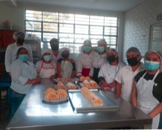

Ser una Institución Educativa, de primer nivel, donde se imparte Educación Técnico-Productiva de calidad, con una infraestructura moderna, acorde a las nuevas exigencias tecnológicas, que permitirá contar con egresados con conocimientos, capacidades, aptitudes y valores cristianos debidamente articulados en competencias para que contribuyan eficaz y eficientemente en el desarrollo de la actividad económica del país.
Impartir Educación Técnico-Productiva de calidad, a los jóvenes y adultos de la zona, para que desarrollen capacidades, conocimientos, actitudes y valores cristianos, debidamente articuladas en competencias para desempeñarse de manera eficiente y eficaz en la actividad económica a nivel local, regional y/o nacional; lo que permitirá al término de su formación insertarse con éxito al mercado laboral, mejorando de ésta manera sus condiciones de vida.
OFERTA FORMATIVA
